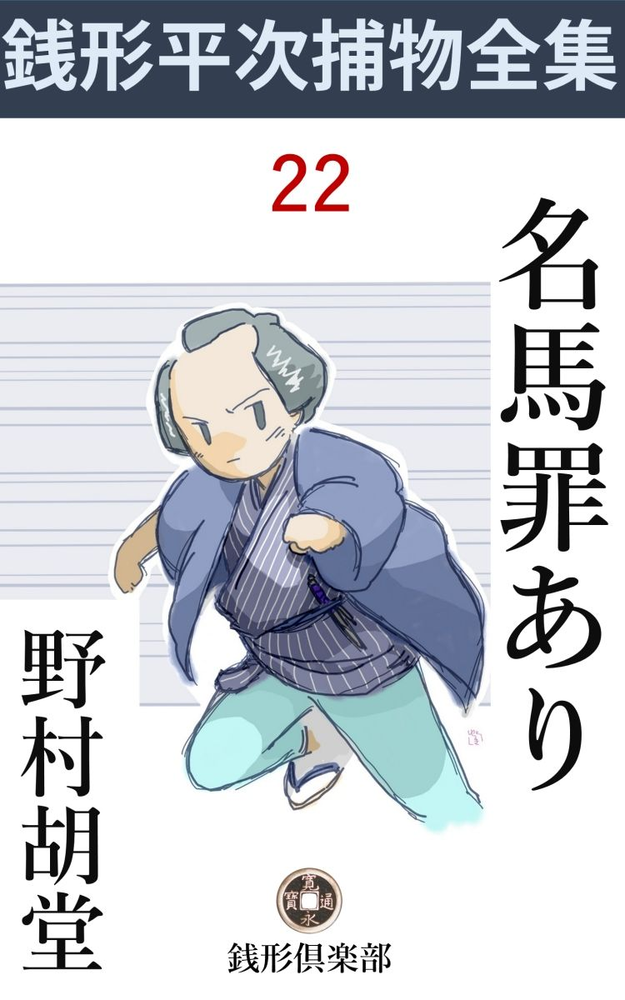
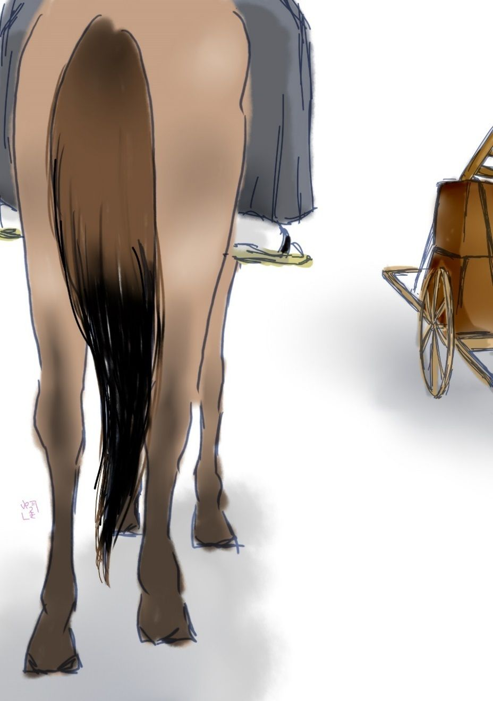

| 名馬罪あり: 銭形平次捕物全集第22話 (銭形倶楽部) | |
| 野村胡堂 | |
| ZENIGATA CLUB (2018) | |

一
「おっと、待った」
「親分、そいつはいけねえ、先刻------待ったなしで行こうぜ------と言ったのは、親分の方じゃありませんか」
「言ったよ、待ったなしと言ったに相違ないが、そこを切られちゃ、この大石 が皆んな死ぬじゃないか。親分子分の間柄だ、そんな因業 なことを言わずに、ちょいとこの石を待ってくれ」
「驚いたなア、どうも。捕物にかけちゃ、江戸開府以来の名人と言われた親分だが、碁 を打たしちゃ、からだらし がないぜ」
御用聞の銭形の平次は、子分のガラッ八こと八五郎を相手に、秋の陽ざしの淡い縁側、軒の糸瓜 の、怪奇な影法師 が揺れる下で、縁台 碁 を打っておりました。
四世本因坊 の名人道策 が、日本の囲碁 を黄金時代に導 き、町方にも専 ら碁が行われた頃、丁度今日の麻雀 などのように一時は流行を極 めた時分です。
もっとも、平次とガラッ八の碁はほんの真似事で、碁盤 と言っても菓子折の底へ足を付けたほどのもの、それにカキ餅のような心細い石ですから、一石を下す毎に、ポコリポコリと、間の抜けた音がするという代物 、気のいい女房のお静も、小半日この音を聞かされて、縫物 をしながら、すっかり気を腐 らしております。
「だらし がないは口が過ぎるぞ、ガラッ八奴、手前 などは、だらし のあるのは碁だけだろう」
平次も少しムッとしました。
「それじゃ、この石を待ってやる代り、何か賭 けましょう」
「馬鹿ッ、汚 い事を言うな、俺は賭事は大嫌いだ」
「金でなきゃアいいでしょう、竹箆 とか、餅菓子とか------」
「よしッ、それ程言うなら、この一番に負けたら、今日一日、お前が親分で俺が子分だ。どんな事を言い付けられても、文句を言わないという事にしたらどうだ」
「そいつは面白いや、あっしが負けたら、打つなり蹴飛 ばすなり、どうともしておくんなさい。どうせ親分なんかに負けっこがないんだから」
「言ったね、さア来い」
二人は又、怪しげな碁器 の中の石をガチャガチャ言わせて、果し合い眼で対しました。
「まア、お前さん、そんな約束をなすって」
お静は見兼ねて声を掛けましたが、
「放って置け、この野郎、一度うんと取っ締めなきゃア癖になる」
平次は一向聞き入れそうもありません。江戸一番の御用聞が、笊 碁 で半日潰 すのですから、まことに天下は泰平と言ったものかもわかりません。
「さア、親分どうです、中が死んで、隅 が死んで、目のあるのは幾つもありませんぜ。------今更征 の当りなんか打ったって追っ付くもんですか」
「フーム」
「降参 なら投げた方が立派ですぜ。この上もがくと、頸 を縊 って身投げをするようなもので」
「勝手にしろ、------褌 を嫌いな男碁は強し------てな、川柳 点 にある通り、碁の強いのは半間な野郎に限ったものさ」
平次はそう言って、一と握りの黒石 を、ガチャリと盤 の上へ叩き付けました。御用聞には惜 しい人柄、碁さえ打たなきゃア、全く大した男前です。
「へッへッ、何とでも仰っしゃいだ、------今日一日あっしが親分で」
「馬鹿野郎」
「親分に向って馬鹿野郎はないでしょう」
八五郎はそう言いながらも、長い顎 を撫で廻しました。唐 棧 を狭く着て、水髪の刷毛 先を左に曲げた、人並の風俗はしておりますが、長い鼻、団 栗 眼 、間伸びのした台詞 、何となく犢鼻褌 が嫌いといった人柄に見えるから不思議です。
丁度その時でした。
「御免下さいまし、平次親分のお宅はこちらでいらっしゃいますか」
切り口上ですが、鈴を鳴らすような美しい声、女房のお静はそれに応じて取次に出た様子です。
「武家の娘だ、が------すっかり顚倒 しているらしいぜ。八親分、こりゃ飛んだ大きな仕事かも知れないよ」
そんな事を言って面白そうにガラッ八を顧 みました銭形の平次も、なかなか人の悪いところがあります。
二
お静に案内されて通ったのは、十八九の武家風の娘。その頃の人ですから、すっかり訓練されて立居振舞に少しの破綻 もありませんが、平次が声を聞いて判断したように、どんな目に逢って来たものかすっかり怯 えて、挨拶を済ませると胸を抱いたまま暫くは口もきけないほど昂奮 しております。
「お嬢様、どうなさいました、大層驚いていらっしゃる様ですが------」
平次は敷物をすすめて、いたわる ようにこう言いました。お静の若い美しい女房振りや、平次の穏やかな調子は、どんなに相手を慰 めたことでしょう。娘は少し落着くと、ほぐれるように、その驚きを話します。
「父上------相沢半之丞と申しますが、大事な書面を紛失 してお腹を召そうとなさいます。一応は止めましたが、書面が出て来ない以上は、のめのめと生きてはおられぬと申します。平次様、お願いで御座います、お助け下さいませ」
「相沢半之丞様と仰しゃると？」
「大場石見 様の用人、牛込見付外に住んでおります」
「フーム」
大場石見というのは、八千石を食 んで、旗本中でも家柄、その用人といえば、陪臣 ながら相当の身分です。
「いつぞや助けて頂いた、小永井浪江様は私の幼友達で御座います。外に頼るところもない身の上、どうぞ力になって下さいまし」
娘はそう言って、後ろに慎 ましく控 えたお静の方を、訴えるように見やるのでした。
「御武家方の紛紜 に立入るのは筋違いですが、兎も角一応承 りましょう」
平次がこう乗り出してくれるともう千人力です。娘はホッとした様子で、語り進めました。
牛込見付外の大場石見というのは安祥 旗本の押しも押されもせぬ家柄ですが、房州の所領に、苛斂 誅求 の訴えがあったために、若年寄から東照宮の御墨附 ------大場家の家宝ともいうべき品------を召上げられ、長い間留め置かれましたが、領地の騒ぎも納まったので、一と先ず下げ渡されることになったのはツイ昨日の事。大場石見早速罷 り出て受取るべき筈のところ、所労のため果し兼ねて、越えて今日、用人相沢半之丞を代理として差出し、御墨附を文箱に納めて持ち帰らせましたが、間違いはその途中、牛込見付外の屋敷へ入ろうという一歩手前に待ち伏せしていたのでした。
相沢半之丞は典型的な用人ですが、剣槍両道にも秀 でた立派な武士。この日主人の代理として、御評定所から御墨附を受取って来るについて、まさかテクテク歩くわけにも行かず、そうかといって、陪臣 が駕籠に乗るわけにも行きません。
この人の唯一の弱身は、生れ付き馬が嫌いで、もっとも身分柄乗らずに済んだせいもあるでしょう、今までは先ずそのために困った経験もなかったのですが、和田倉門外の御評定所へ行って大事の品を受取って来るとなると、馬で行くのが一番ピタリとします。
幸 い、主人、大場石見は大の馬好き、近頃手に入れた『東雲 』という名馬、南部産八寸 に余る逸物 に、厩 中間 の黒助という、若い威勢の好い男を附けて貸してくれました。
相沢半之丞、嫌とも言えず、それに乗って出かけたのが間違いの基 だったのです。
往きは先ず無事、御評定所で御墨附を受取り、一応懐紙を銜 んで改めた上、持参の文箱に移して御評定所を退き、東雲 に跨 って、文箱を捧げ加減に、片手手綱 でやって来たのは牛込見付です。
見付に出て、神楽 坂を上ると、あとは一と息ですから、ここまで来ると、相沢半之丞思わずホッとしました。何となく気が緩 んだのです。
三
「旦那様、悪いものが参りました」
馬丁 の黒助は、前へ駆け抜けて、半之丞の乗った栗毛の轡 を取りました。
「何だ」
半之丞は御墨附を入れた大事の文箱を、鞍 の前輪に添えて確 と押えたまま、黒助の指さす方を見やります。
成程市ガ谷の方から少しダラダラになった道を来るのは、引越しのガラクタとも見える高荷を積んだ大八車。戸棚を二つも重ねて------いかに電話線のない時代でも、その上へ三間梯子 を積んだのですから、恰好が浅ましいばかりでなく、車の動くにつれて、グヮラグヮラと恐ろしい音を立てます。

「旦那様、体裁 は悪う御座いますが、暫く我慢なすって下さい、この馬は疳 が強う御座いますから」
黒助はそう言いながら、法被 を脱いで、馬の首に冠せ、その下から手を入れて、
「ドウドウドウ」
と鼻面から鬣 をさすっております。
が、そんな事で宥 められる『東雲 』でなかったのか、それともすれ違いざま、梯子の先が馬の尻に触ったのか、馬はパッと棹立 ちになると、馬丁 の法被 をかなぐり捨てて、奔流 の如く元の道へ。
「ワーッ、ワーッ」
と言う人声、真昼の往来は断ち割ったように二つに裂 けて右往左往に逃げ惑 う中を、僅に鞍 に獅 噛 み付いた半之丞、必死の手綱を絞りますが何の甲斐もありません。
「旦那様、お濠 だッ、危ないッ、降りて下さいッ」
まだ轡 を放さなかった馬丁 の黒助は、張り切った馬の首の下から必死の声を絞ります。
ヒョイと見ると、成程奔馬 はもうお濠の崖へ乗出そうとしているではありませんか。
「あッ」
半之丞は本当に必死の思いで飛降りました。イヤ、転げ落ちたと言った方がよかったでしょう。大地に抛 り出されて、起き上がらぬうちに、狂いに狂った馬は、二三十尺もあろうと思う崖の下へ、一塊 の土の如く落ちて、水音高く沈んでしまったのです。
「旦那様、お怪我は？」
「おお黒助、文箱 を探してくれ」
「ここに御座います、旦那様」
「有難い、それさえあれば」
落散る文箱を取って差出すと、半之丞押し戴いて立ち上がりました。埃と泥とに、見る影もなく塗 れておりますが、馬は下手でも、体術の心得が確かなので、幸い大した怪我もなかった様子です。
しかしこの醜体 を何時までも往来の人に見せるわけには行きません。半之丞は濠に落ちた馬の始末を黒助に任せて、自分は御墨附の入った文箱を後生大事に、そこからはもう眼と鼻の間の屋敷へ帰って来ました。
屋敷と言ったところで、主君大場石見のお長屋、落馬をした埃 だらけの体で、主君石見の前へ出ることもありません。一応自分の長屋に帰って衣服を改め、髪を撫で付け、さて出かけようとして次の間の机の上に置いた文箱を取り上げて驚きました。
「あッ、これは？」
箱は違っているのです。紐 の色、高 蒔絵 、いくらか似てはおりますが、よくよく見ると、まるっきり違った品で、金 蒔絵 で散らした紋も、鷹の羽が何時の間にやら抱 茗荷 になって、厳重にした筈の封印もありません。
顫 う手先に紐を払って、蓋を開けると、中は空っぽ------
暫くは夢見る心地、何の考えも出て来ませんが、やがて牛込見付の落馬騒ぎから、自分の長屋まで辿 り付いた光景、着換 のために、暫く文箱を隣室に置きっ放しにしたことなどがはっきり思い出されます。
四
「こう言う訳で御座います。御墨附 が出なければ、そうでなくてさえ公儀に睨まれている大場家は明日とも言わず御取潰しになりましょう。御先祖大場甚内様、大坂夏冬の陣に抜群の御手柄を現 わし東照宮様の御墨附を頂いたばかりに、この度御所領の騒動にも、格別の御沙汰もなく、御目こぼしになりました。------それにも拘 らず、大事の御墨附を失っては、御使者に立った父相沢半之丞も生きてはいられません」
半之丞の娘お秀、涙ながらにこう語り進みました。
「------」
八千石の大旗本が、潰 れるか立つか、人の命幾つにも関 わる事だけに、平次もお静も、八五郎も息も吐かずに神妙に聴入りました。
「父上は、主君への申訳、腹を切ろうとなさいましたが、腹 掻 き切って出て来るという品では御座いません。------主君に申上げて、御驚きの中にも、三日だけ猶予 を頂きました。せめて三日、死ぬべき命を永らえ、恥じを忍んで御墨附の行方を探そうという覚悟を定めたので御座います」
「------」
「と申しても、どこに隠されたやら、誰が摺 り換えたやら、掻暮 れ見当も付きません。平次様、お助け下さいまし、外に頼るところもない親子、主従の難儀で御座います」
お秀はそう言ってしまって、畳に手を突きました。血のような涙が、ポロポロと落ちて、その桃色珊瑚 を並べたような指を濡らします。
「お嬢様、お手をお上げなさいまし。御武家の内輪事へ、町方の御用聞や手先が口を出すべき筋では御座いませんが、お話を承 れば如何にもお気の毒で御座います、思い切ってお引受け申しましょう」
きっと挙げた平次の秀麗な面。
「え、それでは引受けて下さる、------何と御礼を申して宜しいやら」
お秀はもう涙です。
「あ、お嬢様、今からお礼は早過ぎます。ついては、これだけの事をお含 み下さいませんか、私は町方の岡っ引ですから、どんな事があっても、御屋敷内の方を縛りはしませんが、三日の間出入りを自由にさして頂いた上、上は大場石見様から、下は馬丁 、下女に至るまで、私の都合で、何時でも物を訊けるということに------」
「それはもう」
「それからもう一つ、この野郎は八五郎と申しまして、私には可愛くてならない子分ですが、御覧の通り人間は少し甘く出来ております」
「親分」
ガラッ八は横から口を出しました。人間が甘いと言われたのが不服だったのでしょう。
「黙っていろ、------ところでお嬢様、今日一日この八五郎が親分で、あっし が子分になるという賭 をいたしました。私の代りに、この男を差上げますから、私だと思って、いろいろ御相談なすって下さいまし、------大丈夫で御座いますとも、人間は甘くても、なかなか良い鼻を持っておりますから、どうかしたら、御墨附を嗅ぎ出すかもわかりません。最初から私が乗出して、曲者に用心させるより、八の野郎を看板 にして蔭で繰 った方が、反って仕事が運びます」
「------」
お秀は不安心そうにガラッ八を見やりました。鼻は良いかも知れませんが、どうもあまり賢 そうな人相ではありません。
五
即刻 八五郎は牛込見付外の大場屋敷へ乗込みました。
八千石の旗本の用人といえば、小大名の家老にも匹敵 するでしょう。相沢半之丞の権力はたいしたもの、その住居も、お長屋という名に相応 わしからぬ堂々たるものです。
「父上様、平次の子分の八五郎という方を伴れて参りました」
「左様か、私は相沢半之丞じゃ、宜しく頼みますぞ」
四十恰好のデップリした武士、人品骨柄には申分ありませんが、恐ろしい心配に打ちひしがれて、さすがに顔色が鉛 のように沈んでおります。
「へエ------」
八五郎のつぶらな眼と長い顎 が、すっかり半之丞を落胆させましたが、折角来たものを追い返すわけには参りません。
「どのようにしても構わぬ、三日の間に御墨附を捜 し出して貰いたい」
「へエ------」
八五郎は定石通り事件を遡上 って考えました。平次がこんな大事な舞台へ、代理として立たせてくれたのは、石原の利助や三輪の万七といった、意地の悪い岡っ引のいないところで、存分に腕を伸させるためでしょう。
「何なと聞くがいい」
と半之丞。
「それでは伺いますが、見付で落馬なすった時は、文箱はどうなりました」
「持っていた------が、生得馬が嫌いで、落馬も生れて始めてだから、大地に膝をついた時、思わず取り落した」
「拾い上げた時変ってはいませんでしたか」
「いや、変る道理がない。眼の前で黒助が拾って、土埃 を払って渡してくれたのだ」
「そこから歩いていらっしゃるうちに、摺り換えられるような事は御座いませんか」
「そんな事はありよう筈はないではないか」
「お帰りになって、暫く隣の御部屋の机の上にお置きになったそうじゃ御座いませんか」
「着換のうち、暫く目を離したが、そこには召使の者が見張っていた」
「その方に逢わして頂けませんか」
「いいとも、これ、お組を呼んで来るがいい」
「ハイ」
お秀が立って行くと、入れ換 って二十一二の、召使とは見えぬ美しい女が入って来ました。
「お召で御座いましたか」
「この人が訊 きたいことがあるそうだ、何でも真っ直ぐにお答えするのだぞ」
「ハイ」
静かに一礼して上げた顔は、その辺の商売人にも滅多にない容色 で、髪形、銘仙の小袖、何となく唯の奉公人ではありません。
「この方は、御女中で御座いますか、旦那」
「フム、まず女中だ」
「まず女中とは？」
「家内に先年死に別れて、何彼と身の廻りの世話をさせている」
そう言えば立派なお妾 です。八五郎は日本一のもっともらしい顔をして、この女を見据えました。
「生れは？」
「房州の知行所の者だ」
と半之丞が引取りました。
「何時頃御奉公に上がりました」
「もう三年位になるかな、お組」
「ハイ」
「旦那、一々そう旦那が仰っしゃっちゃ何にもなりません。この御女中の口 占 から、いろいろの事を見付け出すのが、私の方の術 で」
「左様かな」
ガラッ八の半間な調子と、それを精一杯もっともらしくする言葉に、相沢半之丞も少しうんざりしております。
「ところで御女中、文箱はお前さんの目の前で摺 り換 えられた筈だ、この辺で何もかも申上げたらどうだ」
とガラッ八、思いの外突っ込んだ事を言います。
「えッ、そんな、そんな事は御座いません」
お組の顔はサッと血の気を失いました。
「落馬した時に変らず、道中で変らなければ、旦那が一寸眼を離した時、------お嬢様が御手伝いをして着換をしている時、隣の部屋でお前さんが摺り変えるより外に変りようがないではないか。大事な時だ、よく考えて物を言った方がいいよ」
「------」
半之丞父娘 も、そんな事を疑わないではありませんが、お組の愛に溺 れた相沢半之丞、さすがにそうと断定も出来ず、それを又歯痒 いことに思って娘のお秀が、平次へ頼み込んだのでしょう。遠慮のないガラッ八にこう言われると、敷居際に聞いているお秀は、思わず唇を噛み、半之丞は今更ながら、取返しの付かない成行に、娘の視線を避けて首うな垂れました。
六
「どうだい、八親分」
「お願いだから、その『親分』だけは止しておくんなさい。殺生だよ、全く『ガラッ八』と言われた方が、まだしも清々する位のもので------」
帰って来た八五郎を迎えて、平次はこんな調子で話しかけました。
「それじゃ、ガラッ八親分」
「なお悪いや、------もう碁 の相手は御免だ」
「気の弱いことを言うなよ、ところで首尾はどうだい」
「上々さ、自慢じゃねえが、あっし が乗込むと、一ぺんにカラクリが解ってしまいましたよ、親分」
「大層鼻がいいね、曲者 は見当だけでも付いたのかえ」
「見当は心細いな、動きのとれないところを押えて、白状させるばかりに運んで来ましたぜ」
「へエ------、少し可怪 しいぜ、八」
「こう言うわけでさ、相沢半之丞は三年前に配偶 に死なれて、それから知行所から呼んだ下女のお組というのを妾にしていた。------これは大変な美い女だが、お嬢さんと折合が悪いので、近いうちに縁を切って、田舎へ帰すことになっていますぜ」
「成程」
「文箱を一寸の間見張っていたのは、間違いもなく、その女だから、誰が考えたって曲者はお組に極っているようなものでさ。手落も罪もなくて暇 になる腹いせに、ちょいとそんな悪戯 をしたが、相手が父親の妾だけに、判りきっていても、お秀さんとかいうお嬢さんの口からは騒ぎ出せない。わざわざ平次親分を引張り出して判り切った曲者 を挙げさせようとしたのは、そんなわけですよ」
八五郎は少ししたり 顔でした。成程、それだけの話なら、平次を引張り出す迄もなく、ガラッ八でも事は済みます。
「ところで、そのお墨附 というのは見付かったのかい」
と平次。
「それが判らないから不思議だ、御墨附が見付かるどころか、どんなに責めても、お組というお妾は知らぬ存ぜぬの一点張だ。ね親分、女というものは、思ったより剛情なものじゃありませんか。顔を見ると、そんな大それた事をしそうもないが」
「もう一つ訊くが、文箱は念入りに検 べたろうな」
「見ましたとも」
「塗 か紐 に汚れはなかったかい、土か砂の付いた跡が------」
「そんなものはありゃしません、舐 めたように綺麗でしたよ」
「フーム」
「落馬した時持っていた箱なら、往来へ取落したと言うから少し位拭いたって、泥か埃が付いている筈でしょう。------だから家へ持って帰ってから摺り換えられたに間違いありません」
ガラッ八も見よう見真似でなかなか穿 ったことを言います。
「八」
「へエ」
「これは、思ったより底のある企 みらしいぜ、もう少し様子を見るとしよう」
平次は考え深そうに腕を拱 きました。
「底にも蓋 にも、これっきりの話じゃありませんか」
「いや、そうじゃない。お前は駄目ばかり詰めて、肝腎 の筋へは石を打たなかったんだ」
「へエ、譬 が碁と来たね」
「俺はこれから、ちょいと行って見てくる。用事があったら牛込見付の辺へ来て見るがいい」
もう夕暮に近い街へ、平次は大急ぎに飛出しました。
それから一刻ばかり、秋の日はすっかり暮れて、ガラッ八が所在もなく鼻毛を抜いていると、牛込の大場石見邸から、
「即刻、平次親分に来てくれるように」
と言う丁寧な口上で使 の者が来ました。
「弱ったなア、親分はどこへ行ったか解りませんが、その辺まで行って見ましょう。牛込見付のあたりにいるかもわかりませんから」
ガラッ八はそう言いながら使いの者と一緒に、神田から九段下に出て牛込見付へやって来ました。
八日月の薄明り、幸い人の影は五間十間離れても見当位付きます。
「親分」
ガラッ八は月の光にすかして声を掛けると、濠端の柳の幹 から離れた影が、
「八か、何だ用事は」
紛 れもなく平次の声です。
「大場様から、すぐ来るようにって、御使の方が見えましたぜ」
「そうだろう」
「あれ、待っていたんですかい」
「まア、ね」
平次はそう言って、何やら手に持った物を懐に入れながら近づきました。
七
通されたのは、相沢半之丞の長屋ではなく、本家の大場石見の奥座敷、といっても、庭木戸から廻って、縁側にかしこまった平次とガラッ八は、四方 の様子の物々しさに、思わずギョッとしました。
庭先に番 手桶 、荒 筵 を敷いて、その上の枝ぶりの良い松に吊 り上げたのは、半裸体の美女。言うまでもなく用人相沢半之丞の妾お組というのが、雁字 がらめにされて、水をブッかけられたり、弓の折れで打たれたり、芝居の責 をその儘の拷問 にかけられているのです。
「平次か」
縁側に立ったのは、大場石見 、八千石の当主でしょう。五十を少し越した筋張った神経質な武家、一刀を提 げて、松が枝 のお組と、縁先の平次を当分に見比べた姿は、苛斂 誅求 で、長い間房州の知行所の百姓を泣かせた疳癖 は十分に窺 われます。
「へエ」
「用人相沢半之丞から何もかも聞いた。この女を申受けて、あらゆる責めようをして見たが、剛情我慢で何んとしても言わぬ。命を絶つのは易いが、それでは御墨附の行方も永久に解るまいと言うので、取りあえず其方 を呼びにやったのだ。商売商売で、かような女に口を開かせる術 もあろう、何とか致してくれ」
「------」
「大場家の大事だ。首尾よく御墨附の在所 が判れば、礼は存分に取らせる」
「------」
何という嫌な言い草でしょう。平次は疳 の虫がムカムカと首をもたげましたが、八千石の大身の興廃に拘ることと、胸をさすって唇を噛みました。
「どうじゃな、平次」
「拷問 や牢 問 いは、牢番与力配下の不浄 役人の仕事で、手前共手先御用聞の役目では御座いません、恐れながらその儀は御容赦を願います」
平次は屹 と言い切りました。沓脱 の上にこそ膝を突きましたが、挙げた面魂 は、寸毫 も引きそうになかったのです。
「フーム、そうか、なかなか立派な口をきくのう。が、大場の家の浮沈に関 ることじゃ、捨て置くわけには参らぬ。半之丞、打って打って打ち据えいッ、黒助は水を掛けるのだ」
「ハッ」
馬丁 の黒助は立ち上がって、番手桶の水をザブリと掛けました。初秋の肌寒い風が、半裸の美女を吹いて、そのまま燻蒸 する湯気も匂いそうです。
「半之丞、打てッ」
「ハッ」
相沢半之丞、弓の折れを取って立上がると、三年越寵愛 した自分の妾の肉塊 を、ピシリ、ピシリと叩きます。
「あッ」
キリキリと空に廻るお組の身体は、一塊の綿を束 ねたように、絶え入るばかりもがき苦しみます。
「まだ言わぬか、女」
堪え兼ねて大場石見、一刀を提げたまま庭に降り立ちました。
「殿様、お怨 を申します」
「何？」
不意に、縛られた女の声を聞くと、大場石見は愕然 として振り仰ぎました。
「永い間の非道ななされ方の酬 いとは思いませんか。年々の不作も構わず、無法な御用金を仰せ付けた上、厭が上の徴税 に、知行所の百姓は食うや食わずに暮しております」
「何、何を言う」
「親は子を売り、夫は女房に別れて、泣かない日とてはない何千人の怨み、公儀の御とがめは免 れても、御墨附が紛失した上は、軽くて改易 、重ければ腹でも切らなければなりますまい、おおいい気味」
縛られた美女、月光に人魚のように光るのが、カラカラと血潮に酔ったような笑い声を立てるのでした。
「お前は何だ」
「房州の百姓の娘、殿様に近付いて怨 を報 いたいばかりに、相沢様に取入って、心にもない機嫌気褄 を取りました。相沢様は用人としてするだけの事は、それも内輪にしただけ、罪は十が十まで殿様の我儘と贅沢にあることが解りました。御墨附は私が死ねば、どこにあるか知ってる者もない筈、せめて腹でも切って、多勢の百姓の怨を思い知るがいい、ホ、ホ、ホ、ホ、ホ」
高鳴る嘲笑 。
「お組、それは考え違いだぞ。殿様にはよく申上げて、くれぐれも上納を軽くして頂く、御墨附の在所 を言えッ」
と相沢半之丞、思わず立ち上がって、松が枝に吊 した縄に取りすがりました。
「誰が言うものか、見るがいい、この邸にペンペン草を生やしてやるから」
「お組ッ」
黒助と石見が一団になって駆け付けましたが、縛られたまま舌でも切ったものか、吊られた縄がキリキリと廻ると、お組の蒼白い唇からはクヮッと血潮が流れます。
八
「平次、何とかならぬものか。お組が死んでしまっては、開かせる口もないが、御墨附がなくては大場の御家は断絶だ」
「------」
「約束の三日目は過ぎて、今日はもう七日目ではないか。何とかして捜 し出す工夫はないものだろうか。まさかお組は、焼きも捨てもした筈はない。八五郎とか言うのが気が付くと、直ぐ取って押えて、間もなく主君へ申上げたのだから、御墨附を始末する暇 はなかった筈だ」
相沢半之丞、折入って平次に頼み込みました。お組が死んで七日目、これ以上愚図愚図して、公儀の耳にでも入っては、全くどうすることも出来なかったのでしょう。
「御胸の中は御察し申しております」
「それでは何とかしてくれぬか。拙者も腹を切るにも切られぬ羽目だ」
半之丞は思わず吐息 を吐 きました。主君大場石見の暴圧を永年の間どれだけ緩和して来たことか、この人には、お組が言ったように、決して悪意のないことを平次も知り悉 していたのです。
「旦那、私にはよく解っております」
「何が」
「御墨附は焼きも捨てもしませんが、この儘では決して出っこはありません」
「どうすればいいのだ」
「お人払いを願います」
平次の物々しい様子に、半之丞は立って縁側と隣の部屋を覗きました。
「誰も聞いてはおらぬ」
「御墨附を手に入れるには、大場石見 様が隠居を遊ばして、御家督を先代様の御嫡男 、今は別居していらっしゃる、大場采女 様にお譲りになる外は御座いません」
「えッ」
平次は大変な事を言い出しました。
「長い間の無法な御政治で、御領地の百姓が命を捨ててお怨 みしようと思っております。このままにして置いては、百人千人のお組が出て来ることは、解り切ったことで御座いましょう」
「フーム」
「御当主石見様は、先代の御遺言 通りに遊ばせば、三年も前に二十歳 になられた甥 の采女様に御家督 を譲 らなければなりません。私は七日がかりでこれだけの事を調べて参りました」
「------」
「この儘に時が経てば、御城の目安箱から、大場家御墨附紛失の届が出て来ましょう。一と月とたたないうちに、御家は御取潰しになります」
「------」
「殿様------石見様は一日も早く御隠居遊ばして、本当の御跡取、采女様を家督に直すよう、呉々も御すすめ申上げます。それさえ運べば、憚 りながら、御墨附はその日のうちに私が捜して参ります」
平次の言葉には、妥協 も駆引もありませんでした。大場家を潰 すか、石見が隠居するか、この二つより外には道がありそうもなかったのです。
「旦那様、大事な場合で御座います。後見人から御当主に直られた石見様の悪業のために、大場の御家を潰してはなりません」
「------」
重ねて言う平次の言葉に、相沢半之丞も漸 くうなずいた様子です。
九
事件は一挙に片附いてしまいました。翌る日親類が寄合い、相沢半之丞と平次が説明役になって、家のため、諸人のため、評判の悪い大場石見は隠居する事に決り、すぐさま公儀に届済 みになって、本当の嫡男 、先代の子采女 が入って家督相続をしました。
が、まだ御墨附が出て来ません。
采女が登城して、首尾よく御目見得を済ませた晩、大場家の奥には、采女と相沢半之丞と平次が首を鳩 めておりました。
「平次、もう御墨附を捜してもらえるだろうな、それを機 に拙者も身を退きたい」
自分の粗忽からこの騒動を惹起 したと思込んでいる半之丞は、心の底からそう言うのでした。
「私も今晩あたりは、御墨附をお返し申上げられるかと思います。恐れ入りますが、馬丁 の黒助を御呼び下さいますように」
妙な注文ですが、半之丞はすぐ人をやって、黒助を庭先へ呼び寄せました。
「黒助に何か用事か」
若い采女 は、平次の物々しさが、すっかり気に入ったようです。
「兄哥 、お前の望みは遂げた筈だ。大場の御家を取潰す迄もあるまい。この辺で御墨附を出したらどうだ」
ズイと出た平次、縁側の下に蹲 まる黒助を見下ろしてこう言うのでした。
「えッ、そりゃ親分」
黒助はギョッとして顔を上げました。二十四五のよい若い者、黒助という名とは似も付かぬ色白で、身のこなしも何となく尋常ではありません。
「よく知っているよ、なア、黒助兄哥、お前さんの父 さんは御用金が嵩 んだ上、上納が滞 って水牢で死んだ筈だ。兄妹二人、この怨みを晴らしたさに、お前さんは馬丁になって、厳重な大場様の屋敷に入り込み、妹のお組は下女になって、用人の相沢様に奉公したが、容貌 のよいのが幸か不幸か、到頭側近くお世話することになった。これだけの事を知りたさに俺は房州まで行って来たよ」
「------」
黒助はガックリ首を垂れました。平次の言う事が図星をピタリと言い当てたのでしょう。
「相沢様が御墨附を受取に行った時、千載 一遇 の思いだったろう。お前は前の晩用意をしろと言い付けられると、早速青竹を切って来て水鉄砲を拵 えた、これだよ」
平次はそう言って袖の中から七八寸の青竹、節のところに小さい穴をあけて綿を巻いた棹 を突込んだ、一番原始的な水鉄砲を出して見せました。
「------」
黒助は素より、采女も半之丞も、あまりの事に言葉もなく互に顔を見合せるばかりです。
「馬は耳へ水を入れられると死ぬ、お前は折を狙って『東雲 』の耳に水を入れ、馬のお上手でない相沢様を落馬させて、御墨附の文箱を摺り換えるつもりだったろう。------うまい折 がなくて、牛込見付まで来ると、丁度引越車が通りかかった。お前は法被 を馬に被 せて、その下で水鉄砲の水を耳に注ぎ込み、思惑 どおり気違いのようになった馬から、相沢様が落ちるところを狙 って、予 て用意した文箱を摺り換えたろう。俺には目に見えるように解る」
「------」
「子分の八五郎を相沢様の御長屋へやって、俺は馬の荒れた場所へ行って見た。見当を付けた土手 の下に、この水鉄砲を見付けるのは何んでもないことだったよ」
「------」
「妹のお組は、兄の仕業 と覚 って、文箱の泥を丁寧に拭き取り、罪を自分一身に引受けて死んだのは見上げた心がけだ。気が付けば殺すんじゃなかったが、縛られたまま舌を噛まれたので、手の付けようがなかった」
何という明智でしょう。こう説き明かされて見ると、もう寸毫 の疑いも残りません。
「俺はこの手で妹へ水をブッ掛けさせられた。畜生、殺しても飽足 らないのはあの石見 だ」
黒助はキリキリと歯を噛み締めて、いつぞや、妹が吊られた松が枝を、一月遅れの月の光に見上げました。
「黒助兄哥 、怨みのある石見様は隠居した上、御親類中から爪弾 きされて、行方不明になってしまった。敵は討ったも同じことだろう。この後は采女 様が乗出して、御政治向きもよくなる------、お前の故郷では盆と正月が一緒に来たような騒ぎだ。妹のお組の骨を持って、早く帰るがいい」
「平次、御墨附は」
と相沢半之丞。
「へエ、これがその御墨附で御座います」
次の間の縁側から、ガラッ八の八五郎が、黒塗 金 蒔絵 の立派な文箱、高々と結んだ紐まで以前のままのを捧げて、お能 の足取りといった調子で来たのでした。
「あッ、それは」
「黒助兄哥、済まねえが馬糧 の中を探さしたよ、------それから、相沢様、黒助には給金の残りも御座いましょう。五十両ばかり持たして、故郷へ帰してやっておくんなさいまし」
「------」
何という横着 さ、半之丞が呆 れて黙っていると、若い采女は手文庫の中から二十五両包を二つ出してポンと投 りました。
「お組の墓でも建ててやれ」
黒助は黙ってうなずきました。この若くて艱難をした新領主に楯 を突く心は微塵 もなくなっていたのです。
「親分、鮮 やかだったね、水鉄砲を袂から出した時は、音羽屋アと言いたかったよ」
「お前が文箱を捧げて出た足取りもよかったよ、ハッハッハッハッ、この勝負は中押 で俺の勝さ」
「違 げえねえ」
平次と八五郎は、月明りの下を、ホロ酔加減で神田へ辿 っておりました。家には、美しいお静が寝もやらずに持っているのです。
相沢半之丞は惜 まれながら身を引き、娘のお秀は玉の輿 に乗って、主君大場采女と祝言しました。これはズッと後の話、馬丁 の黒助は本名の九郎助に返って、房州で百姓をした事は申す迄もありません。
（編注）
作品中には、身体の障害や人権にかかわる、差別的な語句や表現が見られますが、本書が成立した当時の時代背景等が現代とは異なる古典的な文学作品でもあり、著者が故人でもありますので、底本のままとしました。ご理解、ご諒承のほどをお願い申し上げます。
著者---野村胡堂
挿絵---萩 柚月 © 2017
初出---「オール讀物」昭和八年十月号 文藝春秋社
底本---「錢形平次捕物全集」第一巻 河出書房 昭和三十一年五月五日初版
編集・発行 銭形倶楽部